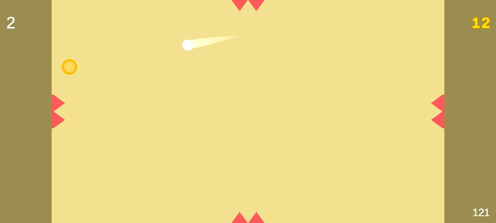

PORTFOLIO
YANIS MAKLOUFI
Présentation
Projets
BOUNCY EDGE
Jeu vidéo mobile en développement depuis peu, créer seul
Ce projet m'a permis de mieux m'adapter aux différentes contraintes de support, que ce soit techniquement ou sur la manière d'appréhender le style.
